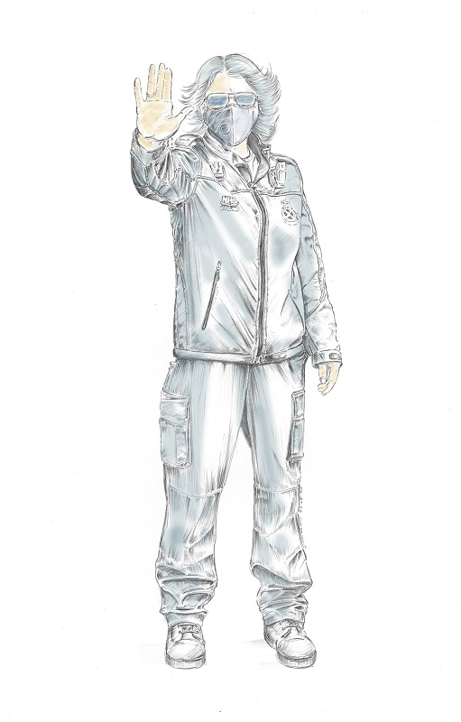
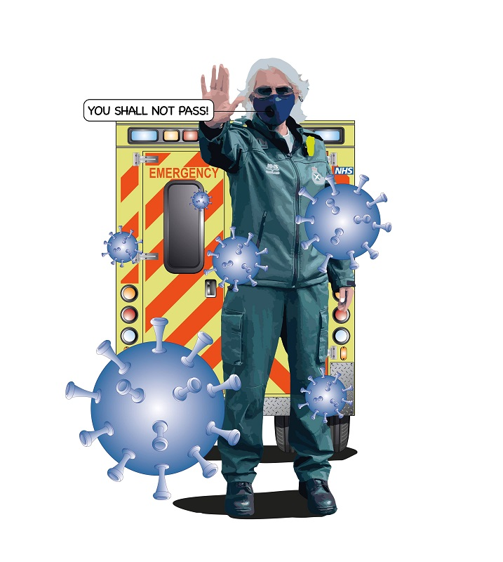
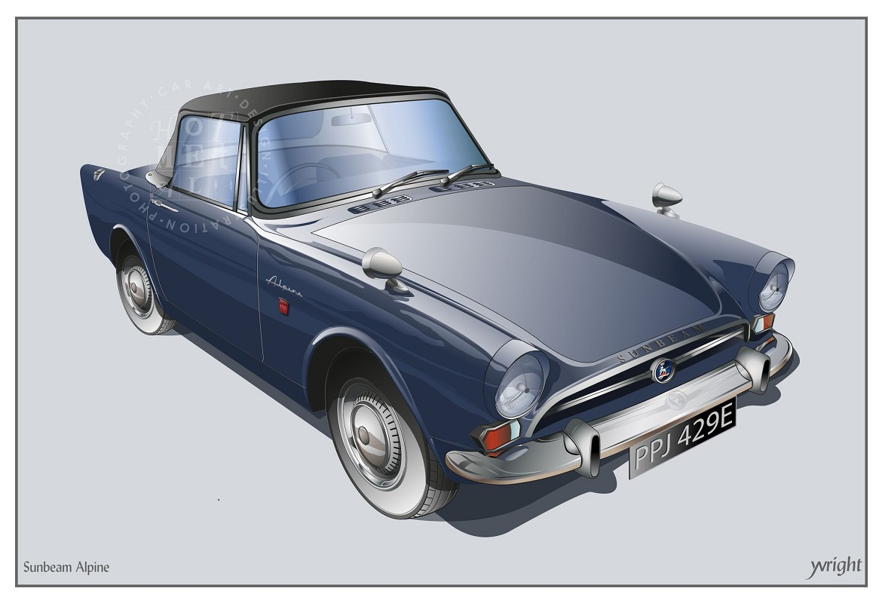
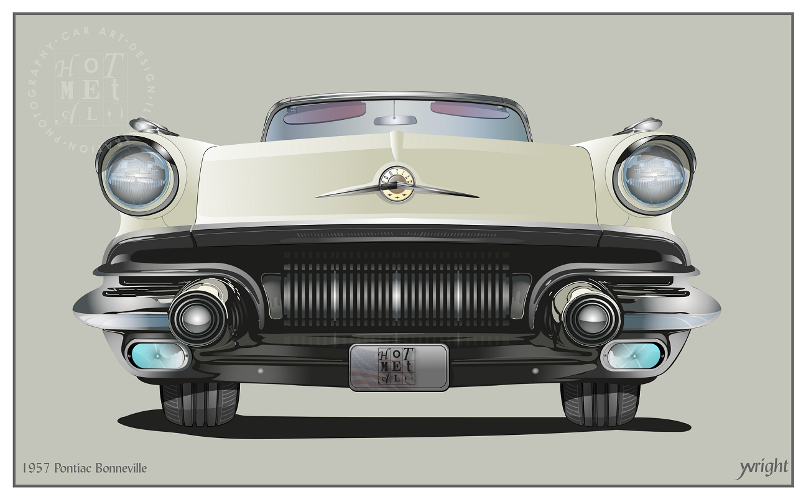
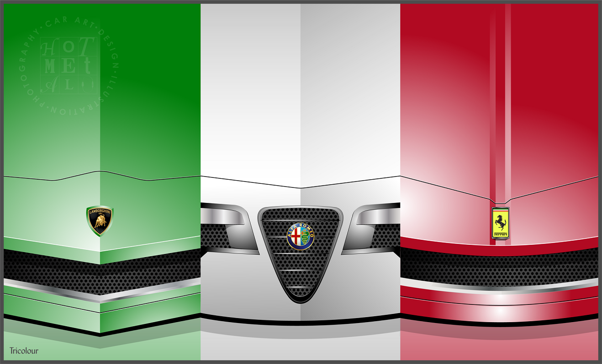
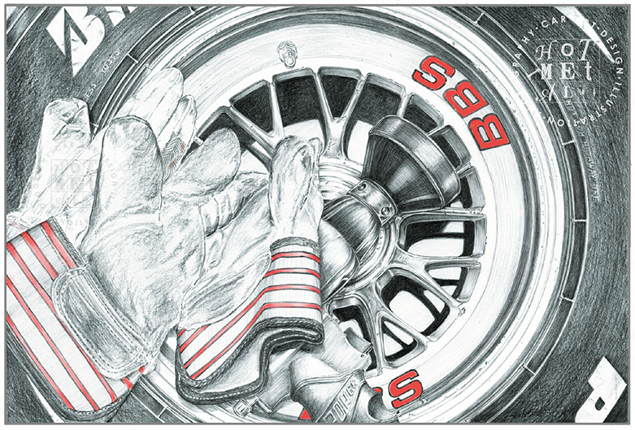

JOHN WRIGHT
NHS Superhero


I have a good friend who recently retired from many years as a paramedic. I recently found out about something that really appealed to me and I wanted to be involved in, the #portraitsforNHSheroes project, organised by @tomcroftartist. I asked my friend if I could paint/draw her portrait for it, she very kindly agreed. Very modestly she wants to remain anonymous.
Just to be different, some would say awkward, I decided I wanted to do the portrait in the style of a "Super Hero" graphic novel. To contrast with this I have also included a proprietary sketch of the main image.
Sunbeam Alpine

I was asked to produce this image of a lovely little Sunbeam Alpine. The first time I saw one of these was at St Abbs during the fabled summer of ‘76. I remember it clearly. It was bright red and even then I loved its American styling. Certainly more than a little influenced by the ’55 “T-Bird” This was commissioned by three sons for their father, who had to sell his beloved car due illness. I had to do a fair amount of detective work to get the details correct. I spent a long time making sure everything was as he remembered it. It now hangs in his study above his desk and brings back many fond memories.
Pontiac badge

Another piece of artwork created during the lockdown. I decided to go full digital this time. A Pontiac Bonneville I saw at the Sarasota Classic Car Museum, recreated entirely using Adobe Illustrator.
Cars Italia

This was a commission to produce an image for the Italian Club in Greenock. "Something with a Ferrari, Fiat or something like that". Well Fiat was not really doing it for me. However, Lamborghini, Alfa Romeo and Ferrari? Well that's different all together. Debs, my other half, said "how about the Italian flag with cars on it?" That got me thinking. While lying in my bed one night, the answer came to me. A green Lambo, a white Alfa and of course, a red Ferrari. Voila, or should that be Ecco? The Italian flag as you've never seen it before. I think the Italians would approve. Once that was resolved the difficult thing was to keep the images simple. Not as easy as you may think, especially the Ferrari.
Ferrari Wheel

While I was working at the Institute of Petroleum Engineering at Heriot Watt, one of my duties was official photographer. My favourite assignment of the year was to take photos of the students team building exercise. Ferrari kindly lent us a formula one car for the day. The students formed teams (four in a team if memory serves me correctly). They had to remove and replace one of the cars wheels. The quickest team won. Some were very good at it too. During a break in the proceedings I took a photograph of one of the wheels with the gloves and tool used for removing the wheel. I always intended to do a drawing of it and here it is

{kind=link}
{kind=link}
{kind=link}
{kind=link}
{kind=link}
{kind=link}
{kind=link}